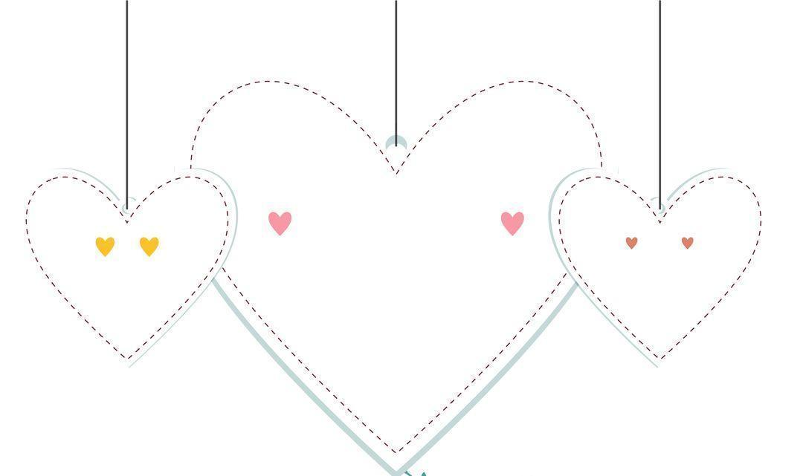
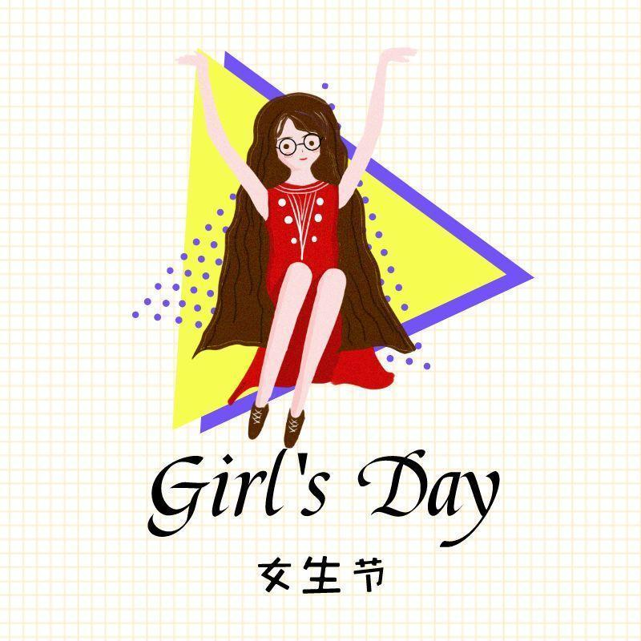

女生节快乐！

3
女生节
7
一年一度的女生节来了
想必广大仙女们都已激活了自己的节日
抱着手机，守着时间
手疾眼快的抢到了自己的“宝贝”
虽说女生节是女孩子的节日
但是广大男同胞们也要了解一些
可以用来讨女朋友的欢心呦
今天小编就带大家了解一下

节日来源
女生节，起源于20世纪80年代末，一般定义在3月7日这一天，三八妇女节前一天，是一个关爱女生、展现高校女生风采的节日，通过开展高品位、高格调的人文活动，引导女生关注自身思想素质、道德修养、文化内涵、心理健康的活动，是高校校园趣味文化的代表之一。


节日起源
关于"女生节"的起源，有不同的版本:1，女生节在国内最早起源于山东大学，国内第一届女生节于1986年3月7日在山东大学科学会堂举行。此后各大媒体分别就"女生节"这一新生事物做了详尽的跟踪报道，女生节逐渐在象牙塔间蔓延; 2，1991年诞生于广东工业大学的前身广东工学院，在男多女少的环境下，男生以"关爱女生"为宗旨，通过开展人文活动，引导女生提高思想素质和文化内涵，强化专业能力的培养，促进心理健康，但时间不是3月7日，而是每年11月的第三个星期，为期一周。

节日意义
女生节重要的意义在于引导广大女生更多关注自身的道德修养、文化内涵，心理健康，从容自信等综合素质的提高，帮助女生正确看待和审视自己，帮助女生们走成长、成才、成功之路，在未来的路中洋溢自信与热情、希望此次活动带给她们一些创新的，有价值的收获，让校园里因为有女生的存在变得格外绚丽。

总有一天
岁月会悄悄改变少女的容颜
但你还是你
温柔而坚定
渺小却伟大
永远爱自己
因而永远美丽
祝所有女生
节日快乐！！！

编辑|辛学敏
图片|网络
资料|网络
点击下方二维码，关注我们了解更多资讯~